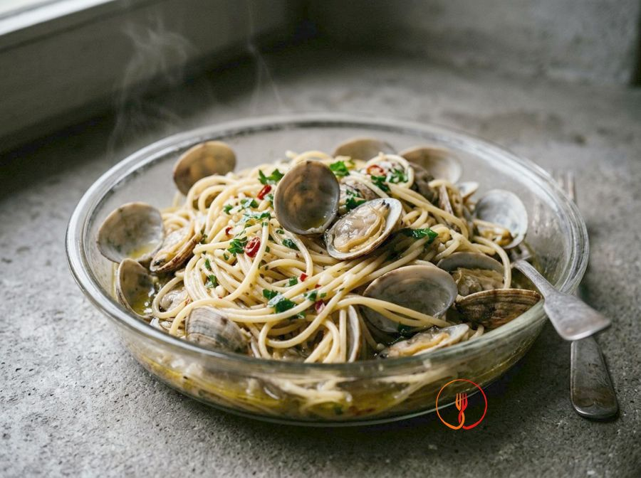

Spaghetti alle vongole
The scent of the sea in a simple dish.
A classic of Italian seafood cuisine, this dish highlights the briny flavor of clams wrapped in a fragrant emulsion. Al dente spaghetti absorb the essence of the sea for a succulent and refined result.
Ingredients
- Durum wheat semolina spaghetti320 g
- Veraci clams1000 g
- Garlic2 cloves
- Fresh parsley20 g
- Extra virgin olive oil40 ml
- Dry white wine100 ml
- Sea salt10 g
- Fresh chili pepper5 g
Allergens
Gluten, Molluscs, Sulphites
Method
- Purge the clams in a bowl with cold water and 30g of salt per liter for about 2 hours, shaking them occasionally to remove sand.
- Rinse the clams thoroughly under running water and discard any broken or already open ones.
- In a large skillet, heat one tablespoon of oil and add the clams. Cover with a lid and cook over high heat for 3-4 minutes until they open.
- Drain the clams, collecting the cooking liquid; filter the liquid through a fine-mesh sieve and a paper cloth to remove any residual impurities.
- Shell about two-thirds of the clams and keep the remaining ones whole for garnish, storing them in the filtered liquid to prevent drying.
- Boil the spaghetti in plenty of lightly salted water, planning to drain them about 3-4 minutes before the cooking time indicated on the package.
- In a large clean skillet, sauté the crushed garlic and chili in the remaining oil. Add half of the clam liquid and bring to a boil.
- Drain the pasta and transfer it to the skillet with the garlic and oil base. Finish cooking by gradually adding the rest of the clam liquid, tossing continuously to emulsify the starches.
- Add the clams (both shelled and whole) and finely chopped parsley during the last 30 seconds of cooking.
- Serve immediately, ensuring the spaghetti is coated in a glossy emulsion and not dry.
Tips
- Always filter the clam cooking liquid to remove any remaining sand particles.
- Sauté the pasta in the pan with the clam water for the last two minutes to create a natural creaminess.
- Consume the dish immediately to fully appreciate the fragrance and texture of the fresh seafood.
Variations
- Add sautéed cherry tomatoes for a more colorful and sweet 'macchiata' version.
- Replace parsley with lemon thyme for an original and citrusy aromatic note.
Nutrition facts (estimate)
| Per serving (240 g) | Per 100 g | |
|---|---|---|
| Energy | 1798 kJ / 427 kcal | 749 kJ / 178 kcal |
| Protein | 18 g | 7.7 g |
| Carbohydrates | 61 g | 26 g |
| of which sugars | 1.8 g | 0.8 g |
| Fat | 11 g | 4.8 g |
| of which saturates | 1.7 g | 0.7 g |
| Fibre | 2.6 g | 1.1 g |
| Salt | 2.4 g | 1.0 g |
AI estimates based on average CREA / USDA data: indicative only, not a substitute for medical or dietitian advice.
Open the recipe in the app for the shopping list, ingredient sheets and nearby shops.